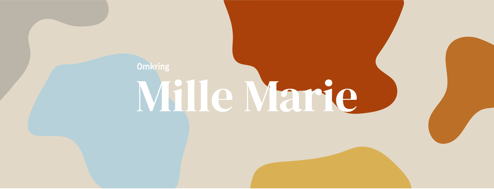

Hejsa!
Jeg hedder Mille og jeg går på MMD på Kea. Dertil har jeg lavet dette portfolio-site – håber du kan lide det!
I min fritid arbejder jeg som freelance-fotograf og har derfor en del erfaring inden for det visuelle område. Dog er Multimediedesign noget helt nyt og spændende som jeg synes supplerer rigtig godt til det jeg gerne vil ud og lave i fremtiden. Jeg er vild med at designe hjemmesider, men kodning har sjovt nok også imponeret mig og er også noget jeg nyder nu.
Jeg glæder mig til de næste semestre på Kea, så vi ses!